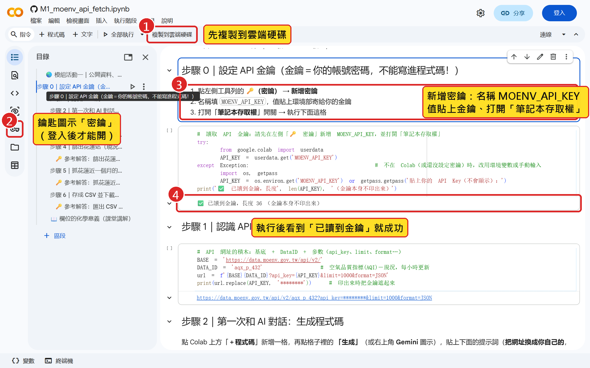

課前 SOP｜模組活動一（11/30）前必做，約 20 分鐘
課前 SOP：申請 API 金鑰並存進你的 Colab
三件事：① 環境部會員註冊取得金鑰 ② 用 Google 帳號開啟 Colab 範本 ③ 把金鑰存進「密鑰」並驗證
🔑 做完請在「W13 課前學習單」勾選：金鑰已申請／已存進 Colab 密鑰／步驟 0 成功。金鑰只放密鑰，不貼給 AI、不截圖。
要完成的三件事
課前要完成的三件事＋成功的樣子
做完請在課前學習單勾選；卡關就看第 6 步的求助方式
你要做的事
- ① 到環境部環境資料開放平臺註冊會員（用學校信箱）
- ② 收信或到會員專區取得 API 金鑰（一串英數字）
- ③ 用自己的 Google 帳號開啟懶人包的 Colab 範本
- ④ 左側「密鑰」新增 MOENV_API_KEY，貼上金鑰
- ⑤ 執行範本步驟 0，看到「已讀到金鑰」
- ⑥ 把範本「複製到雲端硬碟」，之後都開自己的那份
成功的樣子
- 信箱 收到環境部寄的金鑰信（或會員頁看得到金鑰）
- Colab 右上角顯示你的 Google 頭像，不是「登入」
- 密鑰 名稱 MOENV_API_KEY，「筆記本存取權」開關打開
- 步驟 0 輸出「✅ 已讀到金鑰，長度 36」
- 雲端硬碟 「Colab Notebooks」資料夾裡有你的副本
完整步驟流程圖
1
註冊
約 5 分
- data.moenv.gov.tw
- 會員註冊
- 同意條款、填表單
2
取金鑰
約 2 分
- 收信取金鑰
- 或會員專區 API金鑰設定
- 金鑰＝密碼
3
開 Colab
約 5 分
- 懶人包網站 → 活動一
- Open in Colab
- Google 帳號登入
- 複製到雲端硬碟
4
存密鑰
約 3 分
- 左側鑰匙圖示
- 新增密鑰 MOENV_API_KEY
- 打開筆記本存取權
5
驗證
約 3 分
- 執行步驟 0
- 看到「已讀到金鑰」
- 執行載入代碼庫
6
安全
隨時
- 不截圖、不貼給 AI
- 外流就重新申請
- 卡關找助教
1環境部會員註冊
步驟 1-1｜打開環境部環境資料開放平臺

跟著做
- 1瀏覽器輸入 data.moenv.gov.tw
- →右上角有「會員註冊」與「會員登入」
- →先逛一下搜尋框，輸入「空氣品質指標」看資料集
💡 用電腦操作較順；手機也可以，但 Colab 建議用電腦。
步驟 1-2｜會員註冊：同意 API 介接服務條款

跟著做
- →首頁右上角「會員註冊」
- 1捲到最下面，勾選「我已閱讀上述說明…」
- 2按「下一步」
💡 條款重點：金鑰效期 1 年，每支 API 每天 5000 次；對課程綽綽有餘。
步驟 1-3｜填註冊表單（金鑰會寄到這個信箱）

跟著做
- 3電子郵件：填學校信箱（gms.ndhu.edu.tw）
- →姓名、密碼照填；身份類別選「學術機關」
- →資料用途選「研究用」；應用系統名稱填「環境化學課程作業」
- →送出後到信箱收信
💡 收不到信先看垃圾郵件匣；5 分鐘還沒收到，到會員專區也看得到金鑰（下一步）。
2收信或會員頁取得金鑰
步驟 2｜取得金鑰：信件或會員專區「API金鑰設定」

跟著做
- 1登入 → 會員專區 →「API金鑰設定」
- 2被遮住的那串就是金鑰：36 個英數字與連字號
- 3複製起來（只貼進 Colab 密鑰，不貼別處）
💡 金鑰＝你的密碼。截圖、投影前一定先遮住，就像這張圖。
3用 Google 帳號開範本
步驟 3-1｜從懶人包網站按「Open in Colab」

跟著做
- 1網址 rlirdo.github.io/envchem-ai-module-kit → 活動一
- 2按橘色「Open in Colab」
- →Colab 會在新分頁打開範本 M1_moenv_api_fetch.ipynb
💡 沒有 Google 帳號的同學：用學校 gms 帳號即可（它就是 Google 帳號）。
步驟 3-2｜登入 Google，按「複製到雲端硬碟」

跟著做
- 1右上角「登入」→ 用學校 gms 或個人 Google 帳號
- 2上方「複製到雲端硬碟」，存成你自己的檔案
- →之後都開自己的副本（雲端硬碟 → Colab Notebooks 資料夾）
💡 不複製就直接改，關掉後修改會消失；密鑰也是綁在你的帳號上。
4金鑰存進 Colab 密鑰
步驟 4｜把金鑰存進 Colab「密鑰」

跟著做
- 1左側工具列鑰匙圖示「密鑰」→「新增密鑰」
- 2名稱：MOENV_API_KEY（全大寫、底線）
- 3值：貼上你的金鑰
- 4打開左邊「筆記本存取權」開關
- →密鑰只存在你的 Google 帳號，分享筆記本不會外流
💡 名稱打錯一個字母，步驟 0 就讀不到；請直接複製 MOENV_API_KEY。
5執行步驟 0 看到成功
步驟 5｜執行步驟 0 驗證：看到「已讀到金鑰」

跟著做
- 1在範本「步驟 0」那一格按左邊 ▶
- →第一次會問「仍要執行」，按下去
- 2輸出「✅ 已讀到金鑰，長度 36」即成功
- 3再執行下一格「載入代碼庫」，看到「代碼庫已載入」
- →出現 SecretNotFoundError：回步驟 4 檢查名稱與開關
💡 執行時 Colab 會連線到 Google 的機器，第一次約 30 秒；右上角出現 RAM／磁碟表示已連線。
6金鑰保護與求助
步驟 6｜金鑰安全與求助
金鑰＝密碼
- 只放在 Colab 密鑰，不寫進程式碼
- 不貼給 AI、不截圖、不傳群組
- 外流了：到環境部會員專區重新申請
- 金鑰效期 1 年，期末前都有效
卡關怎麼辦
- 收不到金鑰信：看垃圾郵件；仍沒有→用會員專區
- Colab 讀不到：名稱、開關、是否登入同一帳號
- 完全不行：上課前用懶人包「離線備援資料」照樣能做
- 問助教：e 學苑討論區或課堂前 10 分鐘
下一步
11/30 上課請帶筆電＋充電器，以及能讀到金鑰的 Colab；課前學習單（前測）於課堂前 20 分鐘作答並上傳 e 學苑。